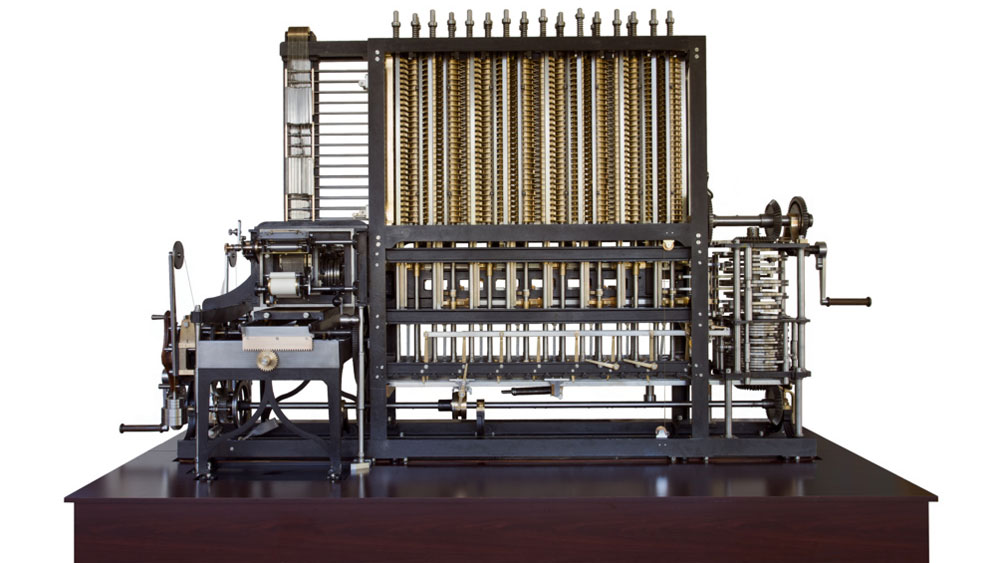

- Born: December 26, 1791
- Died: October 18, 1871
In 1812 Babbage helped found the Analytical Society, whose object was to introduce developments from the European continent into English mathematics. In 1816 he was elected a fellow of the Royal Society of London. He was instrumental in founding the Royal Astronomical (1820) and Statistical (1834) societies.
The Royal Astronomical Society original aims were to reduce astronomical calculations to a more standard form, and to circulate data. These directions were closely connected with Babbage's ideas on computation, and in 1824 he won its Gold Medal, cited "for his invention of an engine for calculating mathematical and astronomical tables."
Babbage began in 1822 with what he called the difference engine, made to compute values of polynomial functions. It was created to calculate a series of values automatically. The Difference Engine was a digital device: it operated on discrete digits rather than smooth quantities, and the digits were decimal 0-9, represented by positions on toothed wheels rather than binary digits. Like modern computers, the Difference Engine had storage. Its construction required the development of mechanical engineering techniques, to which Babbage of necessity devoted himself.
In 1843 Babbage’s friend mathematician Ada Lovelace translated a French paper about the Analytical Engine and, in her own annotations, published how it could perform a sequence of calculations, the first computer program. The Analytical Engine, however, was never completed. Babbage’s design was forgotten until his unpublished notebooks were discovered in 1937. In 1991 British scientists built Difference Engine No. 2, accurate to 31 digits, to Babbage’s specifications, and in the 2000s the printer for the Difference Engine was also built.